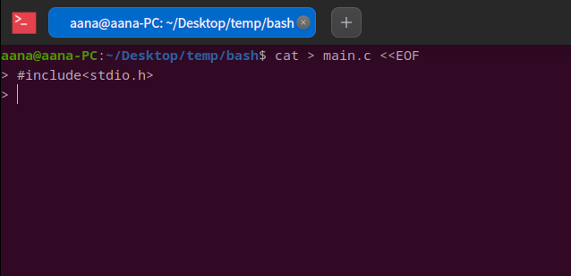
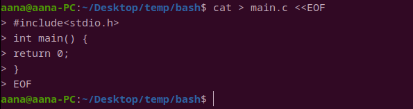

Bash脚本基础
总是还不会太会用bash，所以用的时候总是到处去查感觉非常麻烦，虽然之前学过，但是可惜，忘得差不多了，而且学的也不系统。其实bash和cmake非常类似，在学会了cmake语法之后，学习bash也就很容易理解了。
变量、表达式和作用域
定义一个变量的方式是：a=100，这样就定义了一个变量，但是需要注意bash和cmake中都没存在整数类型这回事，唯一存在的就是字符串，但是可以将字符串解释为数字。
变量要使用可以通过类似于$a的方式，这样就会将$a替换（substitution）为变量的值，$a其实是${a}的缩写，还要两种替换方式$(())和$()，分别用于表达式计算和获取子进程输出。
可以认为bash维持了一个map，从变量名到变量值，而$就是进行一个文本的替换，但是和cmake中不同的是，没有办法进行嵌套的替换，即${${a}}是非法的。
变量有两种作用域，一个是全局，一个是局部的，默认为使用全局作用域，因此体现的结果和动态作用域是类似的，使用局部变量需要使用local。
对于算术运算，首先需要将字符串解释为数字，然后才在$(())中进行，例如a=10; b=13; c=$((a+b))，当然也可以使用另外一种方式就是let关键字（也许是命令），let将后面的表达式进行解释执行，刚才的表达式可以改写为let c=a+b。有时候只希望进行运算，并不希望产生一个替换，这个时候只需要直接使用(())就行了，比如((a=10))，尝试一下就知道两者的差异了。
另外，对于bash来说，运算符和运算数之间不能有空格，因为如果有空格的话会认为是参数，例如a = 5，会认为执行命令a，然后将=和5作为参数，因此必须连着写为a=5，这样才是一个完整的命令。
分支
就挺奇怪的，我很久也没搞懂bash的分支循环到底怎么写的……因为这玩意好像有不同的语法，在不同版本的shell之间有兼容性问题。
一个简单的分支语句的写法如下：
1 | a=100 |
其中条件表达式写在一对方括号中，在一个方括号中只能存在一个条件，如果多个条件需要写在多个方括号中，多个方括号使用bool运算符进行连接，同时需要注意，表达式和括号之间一定要存在空格。
在bash中支持的比较条件有三类：1、字符串比较（=）。2、数字比较（-eq）。3、文件信息(-e)。需要注意，如果运算数不能够转换为数字，那么数字比较会报错。
方括号是test命令的一个语法糖，如果上面的代码可以改写为：
1 | a=100 |
当表达式成立时，test命令会返回0，否则返回1，在bash中0代表执行成功，也就是说会被if当做true来处理，进一步的说，在if后面可以放任意的命令，比如echo这种都行，而且能够使用逻辑运算符进行连接，如下：
1 | if echo aa && echo bbb |
我们应该经常会在命令行里面使用&&来同时执行多条命令，其中的原理就在这里，会对命令的返回值进行处理与操作。
还有else和elif就非常简单了，可以直接略过，直接来看switch就行了：
1 | case $1 in |
还是需要记住，在bash中只有字符串并没有数字这种东西，所以switch的匹配是基于字符串来进行的，那么实际上可以使用正则表达式，实际上最后一项*)就是一个正则表达式。其他的注意一下语法就行了，没有什么特殊的。
循环
在学会了使用分支之后循环也非常简单了。
while比较简单，和大多数编程语言的while差不多：
1 | a=10 |
for的比较复杂，有三种不同的形态。
第一种是进行列表迭代：
1 | a="1 2 3" |
虽然a实际上是个字符串，但是确实可以当做列表一样被迭代，它使用空格对各项进行了分隔，在后面我们会看到如何进行真正的列表迭代。
还有另外一种方式以获取迭代的列表：
1 | for file in $(ls) |
第二种是进行范围迭代：
1 | for n in {1..10} |
通过{1..10}声明了一个范围，可以认为生成了一个从1到10的列表就行了，好像是seq命令的语法糖，我也不清楚，不过差不多。
第三种是C风格的for：
1 | a=13 |
注意一下，i其实是个全局的，另外括号中对于空格没有要求，有没有空格都行，不过风格尽量统一。
感觉三种都非常有用啊……
至于break和continue，它们和一般的编程语言是一样的。
函数
一个简单的函数如下：
1 | function say_hello() { |
上面的代码中定义然后调用了一个函数say_hello，不过没有任何参数，实际上那个括号()只有装饰作用……并不能够用来接收参数，接收参数还是使用$0 $1这些，同时返回值只是返回执行的状态，也就是返回0-255之间的整数，0表示执行成功，要想返回值需要通过其他的方式来进行。
这里有两个方式，一个方式是让它专门设置一个返回值，比如：
1 | function get_int() { |
这种方式实在麻烦，必须要知道使用了那个变量返回，还要小心冲突才行。
1 | function get_int() { |
如果没看明白$()是什么意思也没事，这个就是获取程序的输出的，在后面自然会看到，总之这个是另外一种替换，就是将命令或者函数的输出替换到这里。
如果有些echo的输出不需要，那么可以使用重定向到/dev/null，但是这样还是不方便，如果要有返回值，又要能够进行echo就麻烦了。
所以这里可以看出来，一个函数和一个命令的表现是差不多的，无论是返回值的处理还是调用的方式上。
列表
列表的处理当然必不可少，定义一个列表的方式如下：arr=(1 2 3 4)，下面来输出一下这个列表。
1 | arr=(1 2 3 4) |
上面的代码将列表中值逐个输出了，可以看出来，访问列表元素和C语言中没有上面不同，只不过需要放在${}内，之前就提到过，它是变量替换的完全写法，如果使用echo $arr只会输出第一个元素，虽然有点奇怪，但是就是这样的。
下面用循环来实现一下：
1 | arr=(1 2 3 4) |
有个奇怪的地方${arr[@]}，它干了什么？echo一下就知道了，实际上是输出为了1 2 3 4，也就是说先替换字符串的1 2 3 4，然后再根据空格去逐个迭代，这个和我们在for中看到的是一样的。
除了这种方式迭代，还可以使用下标来进行：
1 | arr=(1 2 3 4) |
echo ${!arr[@]}的输出为0 1 2 3，此外echo ${#arr[@]}输出其长度。
列表还有其他的操作方式，可以进行拼接和转换：
1 | arr=(1 2 3 4) |
1 | str="1 2 3 4 5" |
字符串处理
刚才也能看到，字符串处理和列表处理很有关系，事实上字符串处理相当重要，不过感觉知道如何遍历、拼接、取子串就够了。
拼接
拼接非常简单，两个做法：
1 | a='abc' |
一个是使用+=，这个和处理列表是一样的，还有一个就是直接放在双引号里面，为什么是双引号呢，下面的转义处理会提到。
遍历
其实没有办法通过基于范围的迭代来操作，因为在创建范围的{}中不能进行替换，只能通过C风格的方式来进行：
1 | a='abcdefg' |
首先通过${#a}求取了字符串长度，然后通过${a:$i:1}访问了第i个字符，由于并不存在能够访问单独一个字符的方式，所以用的是子串的访问语法。
子串
取子串的方式上面已经提到了，比较常用的应该就两个。
${string:position}，给一个字符串变量string，然后取从position后的全部。
${string:position:length}，给一个字符串变量string，从position位置取长度为length的子串。
转义处理
很多的符号有特殊的意义，所以bash会对其进行处理，比如$代表了要进行一个替换（应该多数情况是这样的，我只是进行一下概括），所以$后面的字符有不同的含义，但是有时候并不需要进行这种处理，所以可以使用反斜杠（\）来进行转义，让$变为一个普通的字符。
字符串使用单引号（'）和双引号（"）也有不同[5]，在单引号中，不会产生转义，一切都是原样的，而在双引号中，转义会发生：
1 | a=100 |
子进程
在上面提到替换的时候应该就看到了，可以使用子进程的输出来进行替换，如$(echo "abc")会被替换为abc，所以a=$(echo "abc")会让a值为abc。
特殊变量
有一些特殊的变量。
$?：子程序执行状态，如果成功为0，除此之外的都是执行产生异常
$@：所有参数形成的列表
$0：脚本名，和C语言里面第0个参数意义相同
$#：参数个数，不会算上第0个
$1-$9：参数1-9
$$：当前进程号
IO重定向
在bash中执行命令时，输入输出可以被重定向。
输出重定向
输出重定向用的比较多一点先来说说它好了，非常多的时候，需要将程序的输出放到一个文件里面，或者直接忽略掉，输出重定向符号一共有下面三种[3]。
>Syntax: 文件描述符（可选）>文件名>&Syntax: 文件描述符（可选）>&文件描述符&>Syntax:&>文件名
第一种是最简单的情况，就是让文件描述符关联到指定的文件，比如1 > log，是从标准输出重定向到文件log，也可以简写为> log，默认就是将文件描述符1进行重定向，另外使用>>是进行对一个文件进行追加的方式打开（可以看看文件的打开属性的内容）。
第二种有所区别，通常会的使用方式为> log 2>&1，意思是首先将文件描述符1关联到log，然后将文件描述符2（2代表stderr，标准错误）关联到和文件描述符1相同的文件，所以可以认为&就是获取了文件描述符1的关联文件，因此，先后顺序是重要的，如果反过来写成2>&1 > log是不行的。同样>&前面的文件描述符也是可选的，默认为1，不过用默认值没有什么意义。
第三种其实是第二种的一个简写，&> log实际上相当于1>log 2>&log，在&>前面不需要放文件描述符，不过我个人感觉还是不要用简写的好，因为不容易读懂。
输入重定向
输入重定向也有3种。
<Syntax:<文件名<<<<<Syntax:<<<字符串
第一种最简单，使用的方法就是将一个文件的内容作为命令的输入，echo < log。
第二种则是所谓的here-document，在后面的多行参数小节中，我们再来说说吧。
第三种是here-string，就是将一个字符串作为输入给命令，和管道符有一些差别，在管道符部分会进行说明。
对于输入重定向，有一个常见的错误就是以为用输入重定向可以提供命令行参数。args文件中有一个字符串1 2 3 4 5，脚本test.sh中内容为：
1 | echo "number of arguments: $#" |
执行bash test.sh < args，得到的是number of arguments: 0，原因是使用输入重定向修改的不是命令行参数，而是标准输入。正确的方式是bash test.sh $(cat log)。
位置
事实上实际上重定向可以放在命令的任何位置，因为在执行程序之前，bash会对命令进行解析，然后再传给程序，所以我们可以自己写个脚本看看是否是这样的：
1 | # test.sh |
然后使用bash test.sh > log 1 2 3 4 5，得到的输出是5，说明只有后面的1 2 3 4 5被传入到脚本中了，也就是说bash会对几个重定位符号进行进行特殊处理，因此必须按照正确的语法来使用，否则会出现解析错误。如果不需要那么可以使用\进行转义，bash test.sh \> log 1 2 3 4 5就行了。
虽然可以放在任意位置，不过习惯上来说会放在最后面，除非没办法了，比如下面的多行模式中。
管道符
如果希望将一个命令的输出传给另外一个命令作为输入，可以使用管道符，echo 1234 | grep 1234就是这种，将echo的输出值作为grep的输入，可以想象echo的输出用一个管道链接到了grep的输入，管道符是一个非常实用的东西，将多个命令串联起来。
使用管道符实际上会开启一个子进程（别人这么说的，我也不知道是不是）。和<<<有一定相似之处，不过<<<并不会开启子进程，而是通过临时文件来实现的，但是<<<用的太少了，所以用管道符就行了，把<<<暂时忽略掉吧。
多行模式
有时候希望能够输入多行参数，比如想把一个多行的文本重定向输出到一个文件该怎么办？答案是使用<<EOF：
1 | cat > main.c <<EOF |
在一行的末尾加上<<EOF之后会进入多行输入模式：

在结束输入之后再输入EOF就退出多行模式：

其实这里的EOF可以替换为任意的内容，不过，用EOF算是一个传统。
实际上这里就是使用了输入重定向，在<<EOF后面输入的内容会被放入到一个临时文件中，然后作为程序的输入。
单行执行
其实bash脚本可以单行执行多个命令，使得我们直接在终端里面就可以进行执行一大串命令，比如：echo a; echo b; echo c，要点就是使用分号进行分隔，即使是if、for这样的也可以在单行进行执行，比如：for n in {1..10}; do echo "$n"; done; echo over。在do后面不用一个分号，其他的都非常自然，有些时候会看到这样写的：
1 | for n in {1..10}; do |
但是我比较喜欢把do重新起一行。
对于if也一样可以单行执行：if [ 100 -eq 100 ]; then echo "equal"; fi。
另外注意一下分号的位置，不要不小心被识别为一个字符串的一部分了。
引用
[1] Ryans Tutorials —— Bash Scripting Tutorial
[2] You don't know Bash: An introduction to Bash arrays